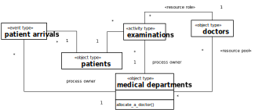
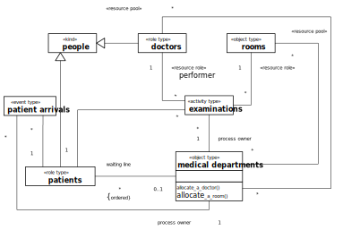
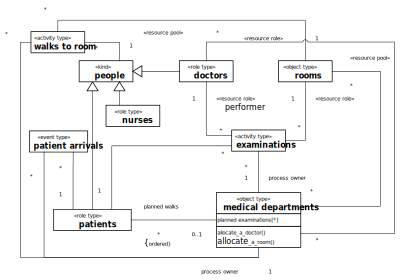

Modeling resource-constrained activities has been a major issue in the field of Discrete Event Simulation (DES) since its inception in the nineteen-sixties, while it has been neglected and is still considered an advanced topic in the field of Business Process Modeling (BPM). The concept of resource-constrained activities is at the center of both DES and BPM. But both fields have developed different, and even incompatible, concepts of business process simulation.
In the DES paradigm of Processing Networks, Gordon (1961) has introduced the resource management operations Seize and Release in the simulation language GPSS for allocating and de-allocating (releasing) resources. Thus, GPSS has established a standard modeling pattern for resource-constrained activities, which has become popular under the name of Seize-Delay-Release indicating that for simulating a resource-constrained activity, its resources are first allocated, and then, after some delay (representing the duration of the simulated activity), they are de-allocated (released).
Resource roles, process owners and resource pools
As an illustrative example, we consider a hospital consisting of medical departments where patients arrive for getting a medical examination performed by a doctor. A medical examination, as an activity, has three participants: a patient, a medical department, and a doctor, but only one of them plays a resource role: doctors. This can be indicated in an OE Class Diagram by using the stereotype «resource role» for categorizing the association ends that represent resource roles, as shown in .
A conceptual information model of the activity type "examinations" with resource roles.

Notice that both the event type patient arrivals and the activity type examinations have a (mandatory functional) reference property process owner. This implies that both patient arrival events and examination activities happen at a specific medical department, which is their process owner in the sense that it owns the process types composed of them. A process owner is called "Participant" in BPMN (in the sense of a collaboration participant) and visually rendered in the form of a container rectangle called "Pool".
In , the resource role of doctors corresponds to the performer role. In BPMN, Performer is considered to be a special type of resource role. According to (BPMN 2011), a performer can be "a specific individual, a group, an organization role or position, or an organization".See Section 10.2.2 in the BPMN 2.0 specification. This enumeration should be extended by adding artificial agents, such as robots, embedded systems and software systems.In BPMN, the performer role is specialized into the HumanPerformer of an activity, which is, in turn, specialized into PotentialOwner denoting the "persons who can claim and work" on an activity of a given type. "A potential owner becomes the actual owner [...] by explicitly claiming" an activity. Allocating a human resource to an activity by leaving the choice to those humans that play a suitable resource role is characteristic for workflow management systems, while in traditional DES approaches to resource handling, as in Arena and AnyLogic, (human) resources are assigned to a task (as its performer) based on certain policies.
One of the main reasons for considering certain objects as resources is the need to collect utilization statistics (either in an operational information system, like a workflow management system, or in a simulation model) by recording the use of resources over time (their utilization) per activity type. By designating resource roles in information models, these models provide the information needed in simulations and information systems for automatically collecting utilization statistics.
In the hospital example, a medical department, as the process owner, is the organizational unit that is responsible for reacting to certain events (here: patient arrivals) and managing the performance of certain processes and activities (here: medical examinations), including the allocation of resources to these processes and activities. For being able to allocate resources to activities, a process owner needs to manage resource pools, normally one for each resource role of each type of activity (if pools are not shared among resource roles). A resource pool is a collection of resource objects of a certain type. For instance, the three X-ray rooms of a diagnostic imaging department form a resource pool of that department.
Resource pools can be modeled in an OE Class Diagram by means of special associations between object classes representing process owners (like medical departments) and resource classes (like doctors), where the association ends, corresponding to collection-valued properties representing resource pools, are stereotyped with «resource pool», as shown in . At any point in time, the resource objects of a resource pool may be out of order (like a defective machine or a doctor who is not on schedule), busy or available.
A process owner has special procedures for allocating available resources from resource pools to activities. For instance, in the model of , a medical department has the procedure "allocate a doctor" for allocating a doctor to a medical examination. These resource allocation procedures may use various policies, especially for allocating human resources, such as first determining the suitability of potential resources (e.g., based on expertise, experience and previous performance), then ranking them and finally selecting from the most suitable ones (at random or based on their turn). See also (Arias et al 2018).
The conceptual process model shown in is based on the information model above. It refers to a medical department as the process owner, visualized in the form of a Pool container rectangle, and to doctor objects, as well as to the event type patient arrivals and to the activity type examinations.
A conceptual process model based on the information model of .
This process model describes two causal regularities in the form of the following two event rules, each stated with two bullet points: one for describing all the state changes and one for describing all the follow-up events brought about by applying the rule.
When a new patient arrives:
if a doctor is available, then she is allocated to the examination of that patient; otherwise, a new planned examination is queued up;
if a doctor has been allocated, then start an examination of the patient.
When an examination is completed by a doctor:
if the queue of planned examinations is empty, then the doctor is released;
otherwise, the next planned examination by that doctor is scheduled to start immediately.
These conceptual event rules describe the real-world dynamics of a medical department according to business process management decisions. Changes of the waiting line and (de-)allocations of doctors are considered to be state changes (in the, not necessarily computerized, information system) of the department, as they are expressed in Data Object rectangles, which represent state changes of affected objects caused by an event in DPMN.
Notice that the model of abstracts away from the fact that after allocating a doctor, patients first need to walk to the room before their examination can start. Such a simplification may be justified if the walking time can be neglected or if there is no need to maximize the productive utilization of doctors who, according to this process model, have to wait until the patient arrives at the room. Below, this model is extended for allowing to allocate rooms and doctors such that patients have to wait for doctors, and not the other way around.
Switching roles: doctors as patients
The same person who is a doctor at a diagnostic imaging department may be treated as a patient of that department. It's a well-known fact that in the real world people may switch roles and may play several roles at the same time, but many modeling approaches/platforms fail to admit this. For instance, the simulation language (SIMAN) of the well-known DES modeling tool Arena does not treat resources and processing objects ("entities") as roles, but as strictly separate categories. This language design decision was a meta-modeling mistake, as admitted by Denis Pegden, the main creator of SIMAN/Arena, in (Drogoul et al 2018) where he says "it was a conceptualization mistake to view Entities and Resources as different constructs".
In , the above model is extended by categorizing the classes doctors and patients as «role type» classes and adding the «kind» class people as a supertype of doctors and patients, we create the possibility that a person may play both roles: the role of a doctor and the role of a patient, albeit not at the same time. The object type categories «kind» and «role type» have been introduced to conceptual modeling by Guizzardi (2005).
A conceptual information model with doctors and patients as people.

Queueing planned activities
Whenever an activity is to be performed but cannot start due to a required resource not being available, the planned activity is placed in a queue as a waiting job. Thus, in the case of a medical examination of a patient, as described in the model of , the waiting line represents, in fact, a queue of planned examinations (involving patients), and not a queue of waiting patients.
This consideration points to a general issue: modeling resource-constrained activities implies modeling queues of planned activities, while there is no need to consider (physical) queues of (physical) objects. Consequently, even if a real-world system includes a physical queue (of physical objects), an OEM-A model may abstract away from its physical character and consider it as a queue of planned activities (possibly including pre-allocated resources). While a physical queue implies that there is a maximum capacity, a queue of planned activities does not imply this. For instance, when a medical department does not require patients to queue up in a waiting area for obtaining an examination, but accepts their registration for an examination by phone, the resulting queue of waiting patients is not a physical queue (but rather a queue of planned examinations) and there is no need to limit the number of waiting patients in the same way as in the case of queuing up in a waiting area with limited space.
A planned activity can only start, when all required resources have been allocated to it. Thus, a planned examination of a patient can only start, when both a room and a doctor have been allocated to it. Let's assume that when a patient p arrives, only a room is available, but not a doctor. In that case, the available room is allocated to the planned examination, which is then placed in a queue since it still has to wait for the availability of a doctor. Only when a doctor becomes available, e.g., via the completion of an examination of another patient or via an arrival of a doctor, the doctor can be allocated as the last resource needed to start the planned examination of patient p.
As a consequence of these considerations, the waiting line of a medical department modeled in as an ordered collection of patients is renamed to planned walks in . In addition, a property planned examinations, which holds an ordered collection of patient-room pairs, is added to the class medical departments. These model elements reflect the hospital's business process practice to maintain a list of patients waiting for the allocation of a room to walk to and a list of planned examinations, each with a patient waiting for a doctor in an examination room.
Decoupling the allocation of multiple resources
For being more realistic, we consider the fact that patients first need to be walked by nurses to the room allocated to their examination before the examination can start. Thus, in the model of , we add a second activity type, walks to room, involving people (typically, nurses and patients) walking to an examination room.
Adding the activity type "walks to room" to the conceptual information model.

A conceptual process model based on the information model of .
This process model describes three causal regularities in the form of the following three event rules:
When a new patient arrives:
if a room and a nurse are available, they are allocated to the walk of that patient to that room, otherwise a new planned walk is placed in the corresponding queue;
if a room has been allocated, then the nurse starts walking the patient to the room.
When a walk of a patient and nurse to a room is completed:
if there is still a planned walk in the queue and a room is available, then the room is allocated and the nurse is re-allocated to the walk of the next patient to that room. if a doctor is available, she is allocated to the examination of that patient, else a new planned examination of that patient is queued up;
if a doctor has been allocated, then the examination of that patient starts if the nurse has been re-allocated, she starts walking the next patient to the allocated room.
When an examination of a patient is completed by a doctor in a particular room:
if there is still a planned examination (of another patient in another room), then re-allocate the doctor to that planned examination, else release the doctor; if the waiting line is not empty, re-allocate the room to the next patient, else release the room;
if the doctor has been re-allocated to a planned examination, that examination starts; if the room has been re-allocated to another patient, that patient starts walking to the room.
Notice that the process type described in does not consider the fact that doctors have to walk to the examination room too, which could be modeled by adding a doctors' walks to room Activity rectangle after the patients' walks to room Activity rectangle.
For being able to collect informative utilization statistics, it is required to distinguish the total time a resource is allocated (its 'gross utilization') from the time it is allocated for productive activities (its 'net utilization'). Thus, only examinations would be classified as productive activities, while walks to room would rather be considered a kind of set-up activities.
Re-engineering the process type by centralizing the re-allocation of resources
In the process type described in , the re-allocation of released resources is handled in the event rules of activity end events:
when a nurse's and patient's walk to a room ends, the nurse is free to be re-allocated; so if there is another planned walk and a room is available, the nurse is re-allocated to a walk of the next patient to that room;
when an examination ends, its resources (a doctor and a room) are re-allocated, if planned activities are waiting for them.
This approach requires that the same re-allocation logic is repeated in the event rules of all activity types associated with that type of resource, implying that all performers involved would have to know and execute the same re-allocation logic. It is clearly preferable to centralize this logic in a single event rule, which can be achieved by introducing release resource request events following activities that do not need to keep resources allocated, as shown in where the re-allocation of doctors and rooms is decoupled from the examination activities and centralized (e.g., in a special resource management unit) by adding the two event types room release requests and doctor release requests modeling simultaneous events that follow examinations.
An improved process model based on the information model of .
This process model describes an improved business process with six event rules:
When a new patient arrives:
if a room and a nurse are available, they are allocated to the walk of that patient to that room, otherwise a new planned walk is placed in the corresponding queue;
if a room has been allocated, then the nurse starts walking the patient to the room.
When a walk of a patient and nurse to a room is completed:
if a doctor is available, she is allocated to the examination of that patient, else a new planned examination of that patient is queued up;
if a doctor has been allocated, then the examination of that patient starts; in addition, a nurse release request is issued.
When a nurse release request has been issued:
if the waiting line is not empty and a room is available, allocate the room and re-allocate the nurse to the next patient, else release the nurse;
if the nurse has been re-allocated to another patient, she starts walking that patient to the room.
When an examination is completed:
[no state change]
a room release request is issued (e.g., by notifying a resource management clerk or the department's information system), and, in parallel, a doctor release request is issued.
When a room release request is received by a resource manager:
if the waiting line is not empty and a nurse is available, allocate the nurse and re-allocate the room to the next patient, else release the room;
if the room has been re-allocated to another patient, the nurse starts walking that patient to the room.
When a doctor release request is received by a resource manager:
if there is still a planned examination (of another patient in another room), then re-allocate the doctor to that planned examination, else release the doctor;
if the doctor has been re-allocated to a planned examination, that examination starts.
Notice that, in the general case, instead of scheduling several simultaneous release requests, each for a single resource, when an activity completes, a single joint release request for all used resources should be scheduled, allowing to re-allocate several of the released resources jointly.
Displaying the process owner and activity performers
The process owner and the involved performers can be displayed in an OEM process model by using a rectangular Pool container for the process owner and Pool partitions called Lanes for the involved activity performers, as shown in . Notice that, as opposed to BPMN, where lanes do not have a well-defined meaning, but can be used for any sort of arranging model elements, DPMN Lanes represent organizational actors playing the resource role of performer.
Displaying the process owner and activity performers in a conceptual process model.
Non-exclusive resources
In OEM, a resource is exclusive by default, that is, it can be used in at most one activity at the same time, if no parallel participation multiplicity is specified. For instance, in all information models above (e.g., in ), the participation associations between the resource classes rooms and doctors and the activity classes walks to room and examinations do not specify any parallel participation multiplicity (for the association end at the side of the activity class), but just the common (historical participation) multiplicity of "*" expressing that resources participate in zero or more activities over time (without an upper bound).
OEM extends UML Class Diagrams by adding the association end stereotype «parallel» for expressing parallel participation multiplicities.
A non-exclusive resource can be simultaneously used in more than one activity. The maximum number of activities, in which a non-exclusive resource can participate at the same time, is normally specified at the type level for all resource objects of that type using the upper bound of a parallel participation multiplicity. In general, there may be cases where it should be possible to specify this at the level of individual resource objects. For instance, larger examination rooms may accommodate more examinations than smaller ones.
A resource can be exclusive with respect to all types of activities (which is the default case) or it can be exclusive with respect to specific types of activities. For instance, in the model of , a parallel participation multiplicity of 0..1 is defined both for the participation of rooms in walks and in examinations. This means a room can participate in at most one walk and in at most one examination at the same time, which is a different business rule, allowing to walk patients to a room even if it is currently used for an examination, compared to the model of , allowing to walk patients to a room only if it is currently not being used for an examination.
Adding parallel participation multiplicities for rooms participating both in walks and examinations at the same time.